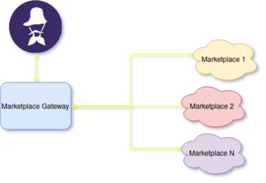
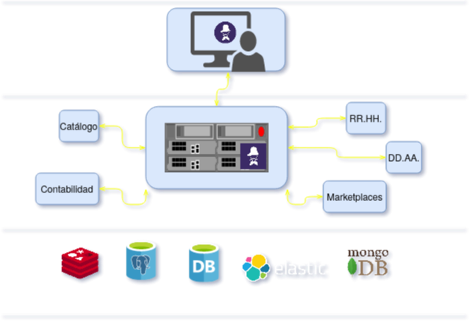

Rompiendo el monolito
“Reflexiones y experiencias en la transición desde una arquitectura monolítica a una de microservicios
Por Guillermo Narvaja de https://radiocut.fm y
Gabriel Parrondo de https://www.fierro.com.ar
Buenas tardes, bienvenidos a la charla "Rompiendo el monolito", reflexiones y experiencias en la t...
Yo soy Guillermo Narvaja y me acompaña Gabriel Parrondo, ambos trabajamos en Lambda Sistemas, una PYME de sistemas 'algo' más conocida por sus productos Fierro y RadioCut.
Rompiendo el monolito
Contexto
Arquitectura Monolítica vs Microservicios
Experiencias
Conclusiones
Esto es una hoja de ruta de lo que vamos a presentar. Esta charla no pretende ser una exposición académica de qué son los microservicios, ya hay excelentes charlas disponibles en ese sentido, sino más bien, luego de una introducción, contar cómo estamos encarando esta transición.
Así que primero un poco de Contexto de nuestra empresa, y el problema de la deuda técnica.
Luego un poco desde lo conceptual la comparación entre arquitectura monolítica y de microservicios, y sus ventajas y desventajas.
Después, contarle la experiencia con algunos microservicios que fuimos creando o extrayendo de Fierro y RadioCut.
Y el cierre con algunas conclusiones.
Lambda Sistemas
Como pueden ver, Lambda Sistemas ya tiene muchos años, más de 15. Las primeras líneas de código de Fierro, nuestro primer producto se remontan a 2004. Siempre con Python, era Python 2.3 en ese momento, y por supuesto no estaba ni cerca de lo que es hoy el lenguaje en popularidad y soporte en cuanto a frameworks, etc.
Dos productos
2004: Fierro - Sistema de Gestión para Librerías y Editoriales
2013: RadioCut - Plataforma para escuchar radio on-demand y viralizar segmentos
Como contaba, el primer producto fue Fierro, en el año 2004, es un sistema de gestión para editoriales y librerías. Con cliente "pesado" desarrollado con wxPython y que al día de hoy tiene más de 300 clientes y que facturan casi 200 millones de dólares por año con el sistema.
Luego, en el 2013, lanzamos RadioCut, un producto bien distinto a Fierro, con la idea de cambiar la experiencia de los oyentes de radio. Grabamos cerca de 1000 radios y con RadioCut los usuarios pueden escuchar los programas cuando quieran y viralizar segmentos. Está hecho en Django.
En todos estos años aprendimos mucho, nos salieron canas (verdes y las comunes), acumulamos mucha experiencia, pero también acumulamos mucha...
Deuda Técnica
DEUDA TÉCNICA. Si uno tiene la suerte de tener un producto que se mantiene en desarrollo durante tantos años, es casi inevitable acumule deuda técnica. Qué es la deuda técnica? Podemos resumirlo como todo aquello que sabemos que deberíamos cambiar o corregir de nuestro código pero no podemos hacerlo ahora. Pueden ser librerías deprecadas, versiones viejas del lenguage, etc.
Acá vemos un gráfico de cómo fue creciendo nuestra deuda técnica desde que empezamos en 2005...
Bueno, en realidad ese es un gráfico de la deuda externa Argentina, pero bien podría ser de nuestra deuda técnica. Y como con la deuda externa, la deuda técnica nos va costando intereses que se hacer cada vez más grandes, hasta hacerse insoportables. Y ahí, vamos al default o restructuramos...
Arquitectura Monolítica
Único (o pocos) "componentes" de software
Un mismo lenguage, misma base de datos
Muchas decisiones atraviesan TODO el código
Tests larguísimos
Alto riesgo de cambios estructurales
De qué hablamos cuando hablamos de Arquitectura Monolítica?
Uno o pocos componentes de software. Adentro de nuestra aplicación podemos tener módulos o tratar de estructurar el código lo mejor posible, en módulos, pero corre todo en un mismo proceso, se lleva en el mismo repositorio, se deploya todo junto.
Usa un mismo lenguage y una misma base de datos. No podemos generalmente tomar decisiones como: para la base de Radios usemos Postgresql, pero para los recortes es más conveniente usar MongoDb.
Este es creo el punto más serio. Las decisiones que tomamos atraviesan todo el código, un lenguaje, una librería, usar string o unicode, usamos asyncio o threads? En fin, cientos de decisiones que una vez que las tomamos se extienden a todo el código.
Suites de test larguísimos.
Y un alto riesgo de cambios estructurales. Lo que decía antes, cambiar una decisión (ejemplo de threads a gevent), atraviesa todo el código y afecta nuestro único componente y por lo tanto tiene un altísimo riego.
Microservicios
“the microservice architectural style is an approach to developing a single application as a suite of small services, each running in its own process and communicating with lightweight mechanisms, often an HTTP resource API" - Martin Fowler
Acá tenemos una definición de lo que es una arquitectura de microservicios. Desarrollar una aplicación, es decir implementar una solución que se presenta al usuario como un único producto pero implementada por detrás como un conjunto de servicios pequeños. Cada uno corriendo en su proceso, y agregaría yo, con código y responsabilidades distintas. La parte de "pequeños" servicios es clave, se trata de no meter todo en un único servicio, pero tampoco meter cada cosa en un servicio aparte y terminar con un infierno de servicios. Y en cuanto a la comunicación, lo más clásico es que se comuniquen por HTTP con interfaces REST, pero no es el único estilo de comunicación, también puede ser orientado a eventos y colas.
Microservicios
Cohesión y bajo acoplamiento llevados al siguiente nivel
Distintas decisiones en cada microservicio
Tamaño manejable
DevOps required!
Los que en la facultad o por su cuenta aprendieron orientación a objetos, seguramente estarán familiarizados con los conceptos de Cohesión y Bajo Acoplamiento. La cohesión tiene que ver con, en una clase o un módulo, poner cosas que tengan que ver entre sí. Y el bajo acoplamiento tiene que ver con la cantidad de puntos de contacto distintos que tiene un módulo o clase con otros. A mayor cantidad mayor acoplamiento y con eso mayor riesgo de romper uno modificando otro. Bueno, estos conceptos llevados a la arquitectura de sistemas, son en los que debemos pensar y aplicar para descomponer en microservicios.
Ahora sí en cada servicio podemos tomar distintas decisiones. Distintos lenguajes de programación, librerías, asyncio en uno y threads en otro, etc.
También, en organizaciones grandes, la descomposición en microservicios permite que cada equipo trabaje en uno y reducir la fricción.
El tamaño es manejable, quiere decir que los tests no son eternos, que el código y las responsabilidades involucradas son entendibles.
Algo importante es que estamos trasladando parte de la complejidad de nuestro producto al entorno de ejecución. Nuestro producto no es un componente sino varios y administrar eso a mano, sin una cultura de DevOps, sería un infierno. Así que si no están implementando las prácticas de DevOps no migren a microservicios.
Hasta acá una intrucción general, ahora Gabriel les va a comentar cómo estamos aplicando estos conceptos al desarrollo de Fierro.
Fierro
Software empresarial: "Enterprise"
Fierro
Aplicación cliente/servidor de 3 capas
Un gran componente servidor
Cliente de escritorio
RPC clásico: amplia superficie de contacto entre ambos componentes
marketplace-gateway
Middleware sencillo: toma información de catálogo y stock de Fierro y lo mantiene sincronizado con una tienda online

Un cambio que vale la pena
Métricas y monitoreo a medida
Ciclos de feedback y release independientes de Fierro
Probar y adoptar herramientas y tecnologías casi sin riesgo
Otros microservicios
Imageserver: imágenes responsive a demanda
Padrones de ARBA/AGIP/otros
Futuro de Fierro
Catálogo
Contabilidad
RR.HH.
Cómo nos imaginamos este futuro

Microservicio - Headliner
Videos de recortes
MP3 de Recortes
Task Oriented - Event Based
Saca dependencias del componente Django
Integración por eventos
mp3_download = Download(status="pending", ...)
eventisc.trigger("download_pending", {"download": mp3_download})
eventisc.trigger(
"download_ready",
{"status": "ready", "storage_data": {...}, "download_id": download_id}
)
Event-ISC
name_prefix: radiocutws.
listeners:
- kind: celery
event_name: radiocutws.download_pending
queue: headliner
task_name: generate_download
task_kwargs:
download_id: "{event_data['download'].id}"
download_type: "{event_data['download'].download_type}"
output_filename: "{event_data['download'].file_name}"
make_params: "{event_data['download'].make_params}"
radio: "{event_data['download'].radio.slug}"
start: "{event_data['download'].start.isoformat()}"
length: "{event_data['download'].length}"
send_task_kargs:
serializer: json
Conectados por configuración
name_prefix: rcheadliner.
listeners:
- kind: celery
event_name_regex: rcheadliner[.]download_.*
queue: celery
task_name: update_download
task_kwargs: "**event_data"
send_task_kargs:
serializer: json
Futuro de RadioCut
Usuarios (suscripciones / notificaciones)???
Actividad / Estadísticas
Nueva app / Front-end web
Algunas conclusiones
La comunicación es difícil
Desarrollar bibliotecas para problemas comunes
Desarrollar bibliotecas para los usuarios del servicio
Docker
Kubernetes
Monitoreo
¿Estamos migrando de un problema a otro?
Problemas de integración
Problemas de performance
Tenemos muchas dudas, pero hasta ahora los resultados están siendo muy positivos